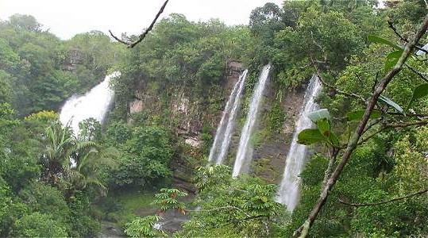
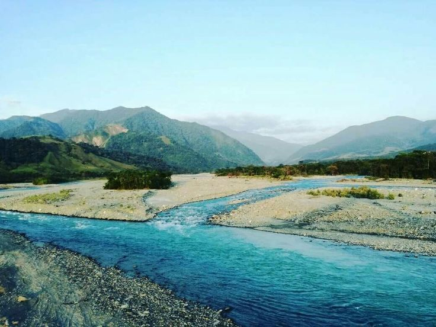
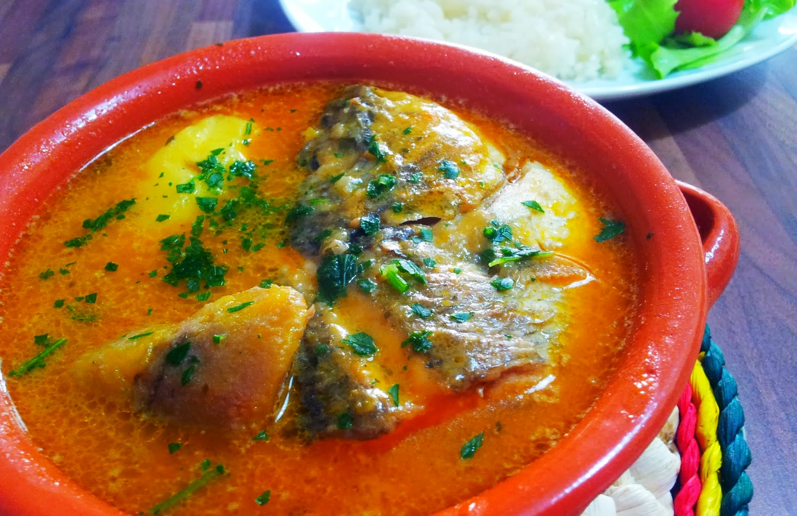
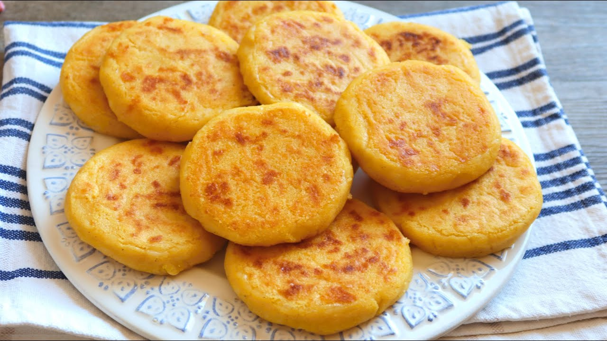
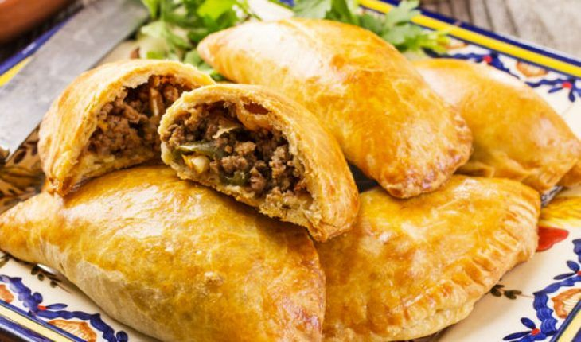
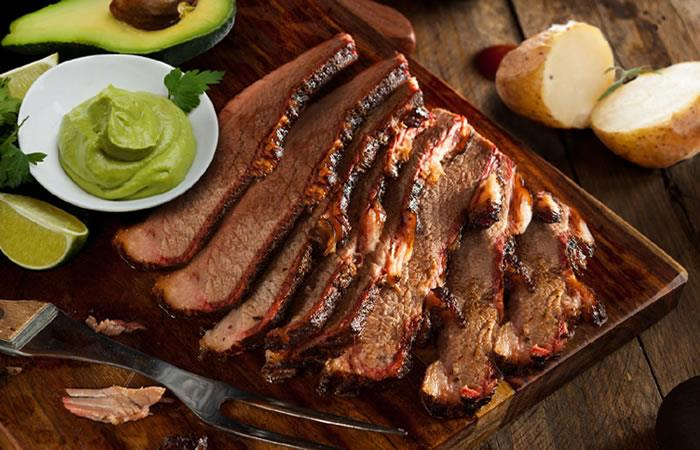

Meta, ubicado en la región de los Llanos Orientales, es un departamento colombiano famoso por su naturaleza exuberante, sus llanuras infinitas y su biodiversidad. El Parque Nacional Natural Tinigua es uno de sus mayores atractivos, ofreciendo un santuario de vida silvestre donde se pueden practicar actividades como senderismo, observación de aves y ecoturismo. El río Ariari y el río Guaviare son populares para el turismo de aventura y deportes acuáticos. Además, los viajeros pueden disfrutar del folclore llanero en festivales como el Festival de la Cultura Llanera en Villavicencio, su capital, que celebra la música, la danza y las tradiciones de la región. Otro atractivo turístico destacado son las termales de la región, como las de La Honda y Cumaral, que atraen a quienes buscan relajación en medio de la naturaleza.
 La gastronomía de Meta refleja la tradición llanera, caracterizada por el uso de carne, arroz, yuca y plátano. Uno de los platos más emblemáticos es la ternera a la llanera, carne asada a la brasa que se sirve tradicionalmente con yuca, ensalada y arroz. El sancocho de pescado es otro plato típico de la región, preparado con pescado de río y acompañado de arroz y verduras frescas. La arepa de maíz y las empanadas rellenas de carne o queso son muy comunes en los desayunos y meriendas. Un plato que refleja la riqueza cultural llanera es la mamona, que consiste en carne de ternera cocinada lentamente a la brasa, acompañada de arroz, yuca y guasacaca, una salsa típica. Las frutas tropicales como el mango, guanábana, y el lulo son frecuentemente utilizadas en jugos y postres refrescantes.
   El sector económico de Meta está basado principalmente en la ganadería, la agricultura y la extracción de recursos naturales. La ganadería bovina es uno de los pilares de la economía del departamento, con grandes extensiones de tierras dedicadas a la cría de ganado, tanto para carne como para leche. La agricultura también juega un papel importante, con cultivos como arroz, maíz, palma de aceite y yuca, que se producen en grandes cantidades. En los últimos años, el petróleo ha tomado un rol creciente en la economía del Meta, con la explotación de yacimientos en la región, lo que ha impulsado el desarrollo de infraestructura y servicios. El turismo, aunque aún incipiente, ha empezado a generar ingresos en el departamento, gracias a la belleza natural de los Llanos y las diversas actividades ecoturísticas que ofrece.